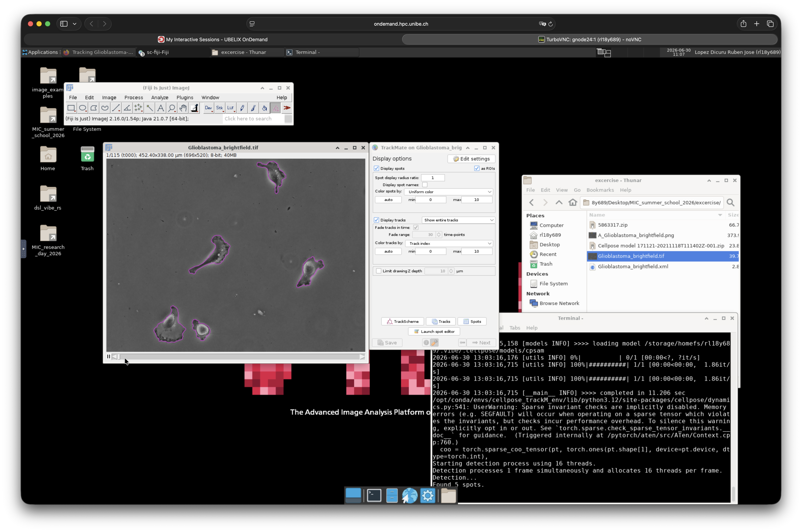

Cell Tracking with TrackMate and Cellpose
Overview
In this tutorial, you will track cells in a challenging bright-field microscopy dataset showing collective migration of glioblastoma-astrocytoma cells1. Because the cells change shape and contrast over time, this dataset provides a good example of the limitations of generic segmentation models and the benefits of model fine-tuning.
The workflow is based on the TrackMate Cellpose tutorial, which is available on the ImageJ website here.
Our goal is to accurately segment and track the cells throughout the image sequence. We will first evaluate the segmentation produced by the default Cellpose-SAM2345 model available in TrackMate67. Next, we will fine-tune the model using a small set of manually corrected images. Finally, we will use the newly trained model in TrackMate to improve segmentation quality and generate more reliable cell tracks.
Let’s get started.
Open and visualize the dataset
Download the dataset
- Start your VIBE session.
- Open Firefox and download the tutorial dataset from Zenodo using this link.
- Create a project folder and save the downloaded archive there.
- Extract the archive using PeaZip, available from:
Applications → VIBE → VIBE Applications → PeaZip
Visualize the dataset
- Open Fiji-TrackMate from:
Applications → VIBE → VIBE Applications → Fiji → Fiji (fiji-TrackMate-20260601) [VIBE]
- Drag and drop the file Glioblastoma_brightfield.tif into Fiji.
- Explore the dataset. Inspect the image dimensions, bit depth, number of frames, and other metadata.
Run TrackMate with the default Cellpose-SAM model
Let’s begin by evaluating the segmentation produced by the default Cellpose-SAM model before performing any training.
- Open TrackMate from:
Plugins → Tracking → TrackMate
- TrackMate will automatically detect the image metadata. Accept the default settings and click Next.
- In the Select a detector window, choose Cellpose-SAM detector and click Next.
- Configure the detector using the following settings.
| Setting | Value |
|---|---|
| Conda environment | Cellpose_trackM_env |
| Pretrained model | cellpose-SAM |
| Channels | All channels |
| GPU | Enabled |
| Simplify contours | Enabled |
- Move to the first frame and click Preview.
- The detected cell contours should appear as shown below.

- Click Next to run segmentation on the entire image sequence. This process may take a few minutes.
- Once segmentation is complete, click Next again.
- Keep the default settings in the Initial Threshold window and click Next.
- In the Set filters on spots window, scroll through the frames to inspect the segmentation results.
How would you assess the segmentation quality?
Although many frames are segmented accurately, several frames contain missing or incorrect segmentations. In the next section, you will select a few representative examples and use them to fine-tune the Cellpose-SAM model.
Select training images
Identify three frames where the segmentation performs poorly.
Save each frame as an individual image in a new folder inside your project directory named:
train_dataset
Tip: Fiji provides several ways to extract individual frames from an image sequence.
Open the training images in Cellpose
- Open Cellpose from:
Applications → VIBE → VIBE Applications → Cellpose → Cellpose (cellpose-gui-4.0.8) [VIBE]
- Drag one of the training images into the application.
- Take a few minutes to explore the interface. The Help menu is a good place to start.
Correct the annotations and train a custom model
- In the Segmentation panel, click Run CPSAM.
- Compare the segmentation with the original image.
- Correct any incorrectly segmented cells.
Useful shortcuts:
-
Ctrl + Left Click — Delete a label
-
Right Click — Add a new label
-
Repeat the process for each training image.
-
Once all images have been corrected, start model training by selecting:
Model → Train new model with image + mask in folder
- Leave the default training parameters unchanged.
- Enter a memorable name for your model.
- Click OK and wait for training to complete. Progress is displayed in the terminal window.
The complete process is illustrated below.
Export the trained model
The trained model is automatically saved in the training folder.
Locate the model file using the name you provided during training. You will use it in the next section.
Re-run TrackMate using the custom model
Return to Fiji-TrackMate and navigate back to the Cellpose-SAM detector settings.
- Instead of selecting a pretrained model, choose Path to a custom model.
- Browse to the model you trained in the previous step.
- Move to frame 17 and click Preview.
Does the new model produce a better segmentation?
- Click Next to run segmentation on the full image sequence.
- Once complete, inspect the segmentation in the Set filters on spots window.
Compare the frames that previously failed with the new results. Has the segmentation improved?
Continue through the wizard until you reach the Select a tracker window.
Choose Simple LAP tracker and use the following parameters.
| Setting | Value |
|---|---|
| Linking max distance | 60 µm |
| Gap-closing max distance | 60 µm |
| Gap-closing max frame gap | 10 |
Adjust the display settings
Continue clicking Next until you reach the Display options window.
Click Edit settings and configure the following options.
Spots
- Enable Draw spots as ROIs
- Set Spot alpha transparency to 0.3
Tracks
- Set Track display mode to Show track backward in time
General
- Set Line thickness to 2
Close the settings window.
The segmented cell outlines and tracks should now be overlaid on the original image sequence, similar to the example below.
Export the tracking results
You can export the tracked image sequence either as a TIFF stack or directly as an AVI movie.
Export as a TIFF stack
- Continue clicking Next until you reach the Select an Action window.
- From the drop-down menu, select Capture overlay.
- Click Execute.
- Select the frame range you want to export (typically the entire image sequence).
- Click OK.
- Save the generated TIFF stack in your project folder.
Export as an AVI movie
- Convert the image to RGB Color.
- Go to:
File → Save As → AVI
- Select the desired compression method and frame rate.
- Save the AVI file in your project folder.
-
Guillaume Jacquemet, Joanna W. Pylvänäinen, & Jean-Yves Tinevez. (2022). Tracking Glioblastoma-astrocytoma cells imaged in brightfield with TrackMate-Cellpose [Data set]. Zenodo. https://doi.org/10.5281/zenodo.5863317 ↩
-
Pachitariu, M., Rariden, M., & Stringer, C. (2025). Cellpose-SAM: superhuman generalization for cellular segmentation. bioRxiv. ↩
-
Stringer, C., Wang, T., Michaelos, M., & Pachitariu, M. (2021). Cellpose: a generalist algorithm for cellular segmentation. Nature methods, 18(1), 100-106. ↩
-
Pachitariu, M. & Stringer, C. (2022). Cellpose 2.0: how to train your own model. Nature methods, 1-8. ↩
-
Stringer, C. & Pachitariu, M. (2025). Cellpose3: one-click image restoration for improved segmentation. Nature Methods. ↩
-
Tinevez, J.-Y., Perry, N., Schindelin, J., Hoopes, G. M., Reynolds, G. D., Laplantine, E., … Eliceiri, K. W. (2017). TrackMate: An open and extensible platform for single-particle tracking. Methods, 115, 80–90. doi:10.1016/j.ymeth.2016.09.016 ↩
-
Ershov, D., Phan, M.-S., Pylvänäinen, J. W., Rigaud, S. U., Le Blanc, L., Charles-Orszag, A., … Tinevez, J.-Y. (2022). TrackMate 7: integrating state-of-the-art segmentation algorithms into tracking pipelines. Nature Methods, 19(7), 829–832. doi:10.1038/s41592-022-01507-1 ↩